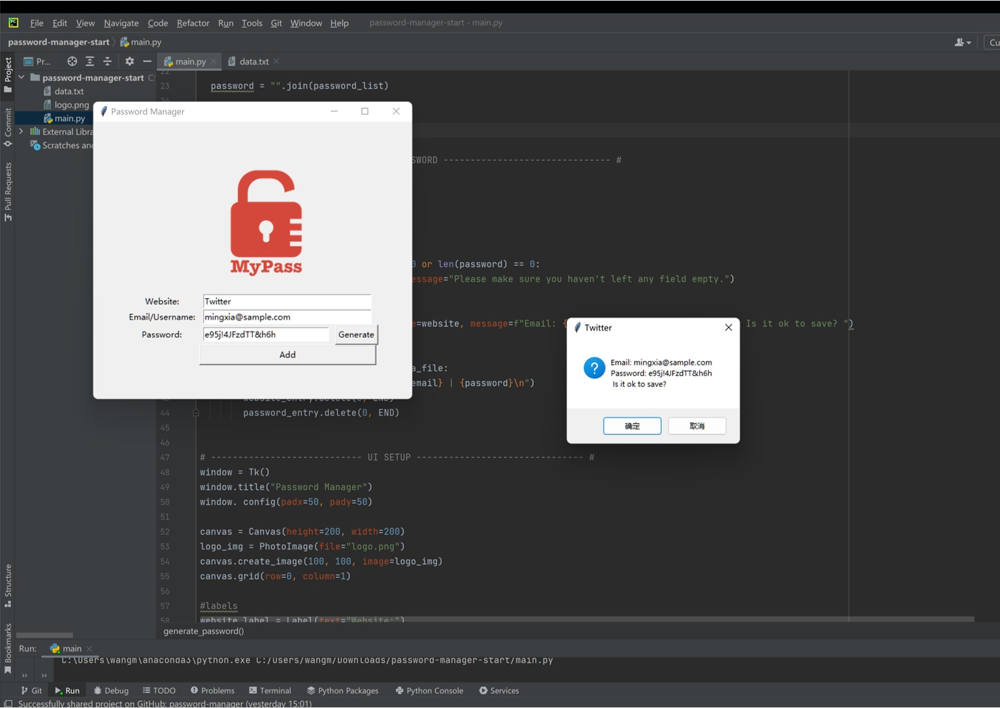

Password manager
Completed by Python

It helps the user generate complex and secure passwords and stores all the information on a local text file, so you don't need an internet connection to check your saved passwords. It will pop up a window to ask for saving confirmation and if there is any field left empty when clicking “add” an error window will be shown. A more convenient function is that every time you click the “Generate” button the newly created password will be automatically copied into the clipboard.